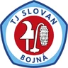
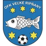

Posledný zápasU13 · IV. liga mladších žiakov U13, 11. kolo
Výsledok 5:1
 TJ Slovan Krušovce (hostia)
TJ Slovan Krušovce (hostia)· TJ Družstevník Jacovce · výhra
Návrh webu · nie je to oficiálna stránka klubu
IV. liga mladších žiakov U13 · 3. miesto z 11 · vedúci Andrej Mojžiš
Posledný zápasU13 · IV. liga mladších žiakov U13, 11. kolo
Výsledok 5:1
TJ Slovan Krušovce (hostia)· TJ Družstevník Jacovce · výhra
7–0–2výhry, remízy, prehry · skóre 35:22
IV. liga mladších žiakov U13
| # | Tím | Z | V | R | P | Skóre | B |
|---|---|---|---|---|---|---|---|
| 1 | 9 | 8 | 1 | 0 | 38:19 | 25 | |
| 2 | 9 | 7 | 1 | 1 | 42:13 | 22 | |
| 3 | 9 | 7 | 0 | 2 | 35:22 | 21 | |
| 4 | 9 | 6 | 0 | 3 | 49:29 | 18 | |
| 5 |  TJ Slovan Bojná | 9 | 4 | 0 | 5 | 50:27 | 12 |
| 6 | 9 | 4 | 0 | 5 | 24:26 | 12 | |
| 7 | 9 | 4 | 0 | 5 | 36:44 | 12 | |
| 8 | 9 | 3 | 0 | 6 | 23:29 | 9 | |
| 9 | 9 | 1 | 0 | 8 | 16:59 | 3 | |
| 10 |  OFK Veľké Ripňany | 9 | 0 | 0 | 9 | 13:58 | 0 |
| 11 | 0 | 0 | 0 | 0 | 0:0 | 0 |
Hráči, ktorí v roku 2026 nastúpili alebo boli v nominácii (Sportnet). Pri mládeži len mená.